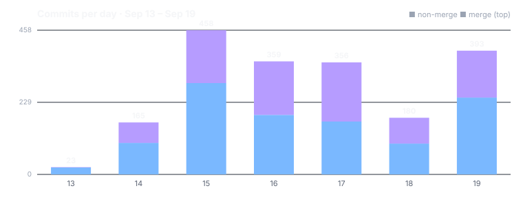

Four things changed this week
A shared model file no longer has to fit in memory
Checking a large model file in pieces covers what happens when someone in your group shares a local AI model: NAOMS fetches it straight from them over a peer-to-peer connection and checks every byte against its signature before keeping anything. The receiving side used to read the whole file into memory to do that, capping models at 256 MiB. It now streams — a measured import of a 5 GiB file needed about 20 MiB of extra memory, not 5 GiB of it.
Weather should not be written down
Weather should not be written down is a bug-fix article with a clean rule behind it: some state only matters for a moment — who is online right now, where a shared cursor currently sits — and a tool meant for exactly that kind of passing state had ended up mirroring an entire chain's graph and rewriting a multi-megabyte database record on every change. The fix, and the rule it leaves behind: passing state lives in memory and is never written to disk.
Four tabs for everything waiting on your say-so
Four tabs for things that need you tours the Approvals window: a new device asking to join your identity, an app asking to install, an AI plan waiting to run, a group vote where it's your turn, an invitation, a question from an agent — all of it lands in one window, split into four tabs (Approvals, Governance, Memberships, Agents). Two of the tabs say, in opposite ways, what happens if you say nothing at all.
An office suite, and where it actually lives now
A whole office suite inside NAOMS covers Docs, Spreadsheet, Presentations and a PDF viewer running on your own machine, with live co-editing between two machines built in — one participant's own computer keeps the changes in order, so there is no document server in the picture. It shipped inside the main NAOMS codebase on 18 September and moved into its own repository shortly after, as part of the broader "1797" package-extraction rewrite; NAOMS now loads it externally. Its own commits are not part of this week's area counts for that reason.
What changed area by area
The window's real numbers, per-commit file union, with 20 mechanical
bulk-sweep commits excluded (a CI containerisation rebuild, a six-part
sequential migration off inline deno.land/std assert specifiers across the
whole source tree, and fourteen more single-commit sweeps up to 1,796 files
each) so that migration doesn't get counted as a week of feature work in
whichever area it happened to touch:
scripts 332 · sdk 201 · repo-pipelines 179 · core/chain 175 · pkg-manager 130 · packs 125 · core/transport 116 · browser client 101 · ci 67 · calling 63 · hives 63 · photos 52 · work-queue 41 · chat 39 · core/boot 38 · aqua-templates 37 · agents 37 · call-participant 33 · debug-support 31 · core/tools 30.
An honest note on this week's pace
This is the quietest of the four weeks covered by this and the three dispatches before it (20, 21, 22, 25) — about a third of week 20's commit volume and a fifth of week 22's. That is a measured fact about this specific seven days, not a claim about a slowdown in the project generally: a busy push landed in the days right after this window closed, including the office-suite piece above and a batch of sixteen more articles published on 09-27.